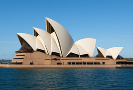
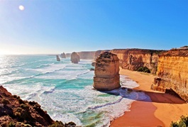

Sydney Opera House
One of the most famous landmarks in Australia, featuring its iconic sail-shaped design on the harbor.
Wikipedia
Parliament House
The main government building of Australia, located in Canberra, with modern architecture and a large grass lawn.
Wikipedia

The Twelve Apostles
Natural limestone stacks off the coast of Victoria, showcasing the stunning beauty of the Australian coastline.
Wikipedia.jpg)
Brisbane
A modern city with a subtropical climate and a lively riverfront, featuring a vibrant skyline and cultural attractions.
Wikipedia
Adelaide
Known for its festivals and nearby wine regions, Adelaide is the capital of South Australia and a cultural hub.
Wikipedia